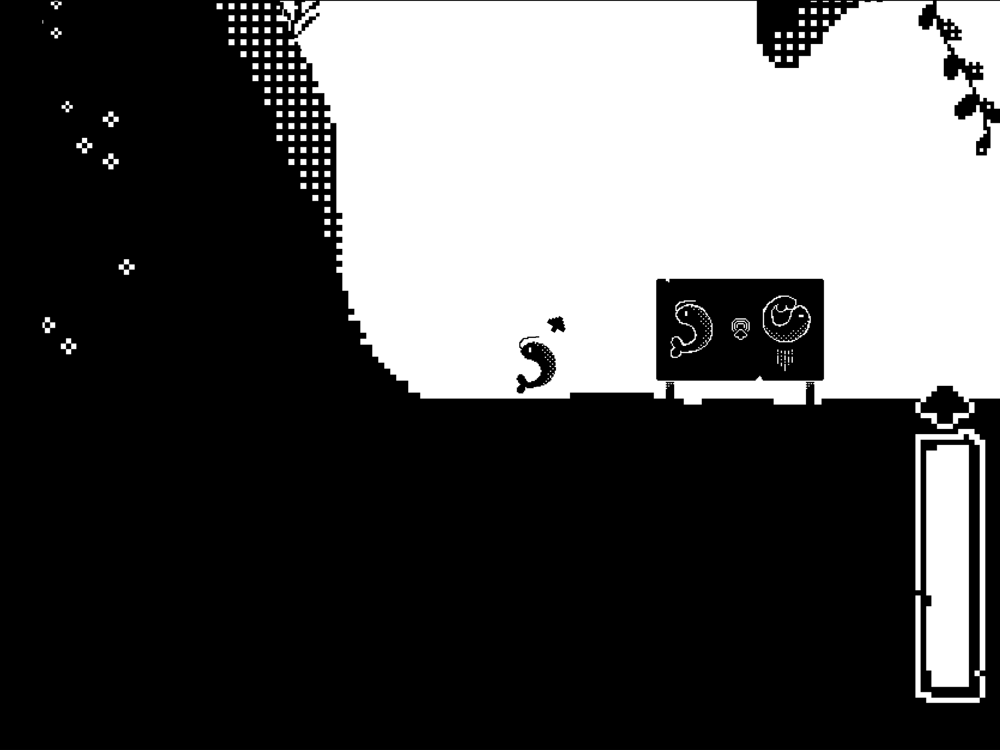
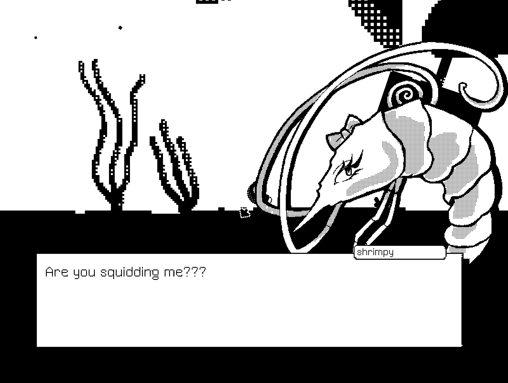
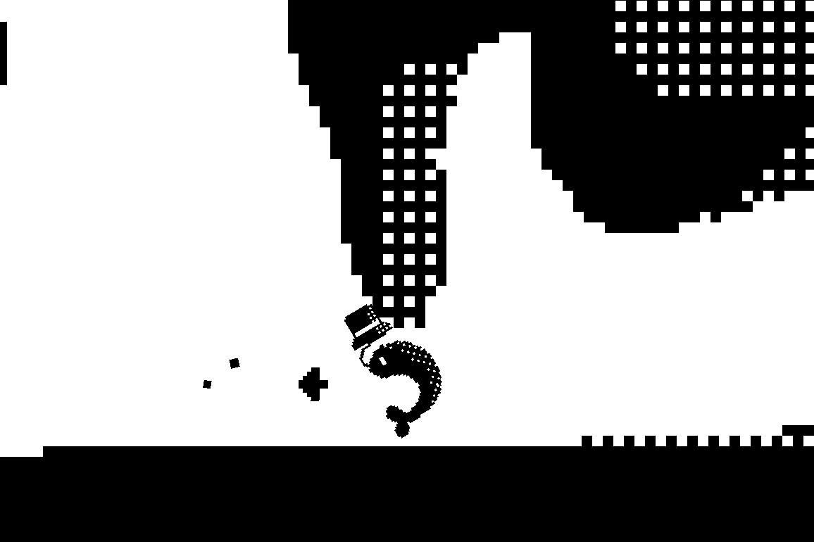
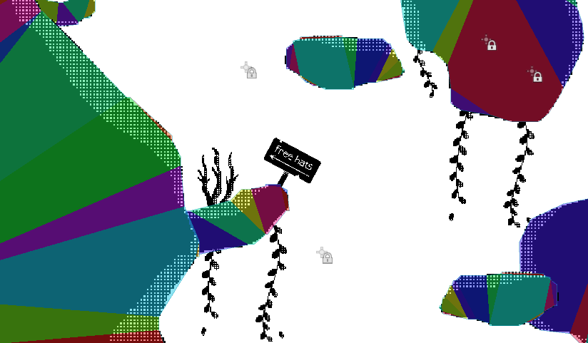
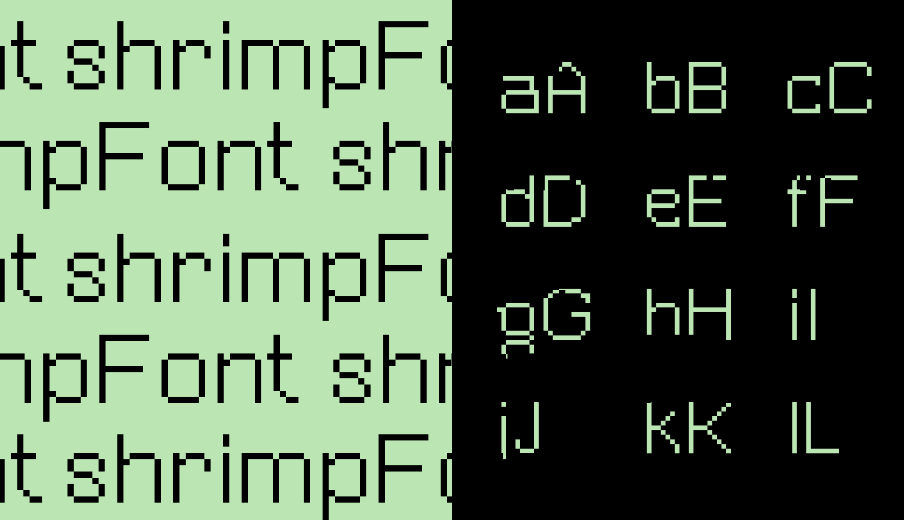

Overview
Problem: How do you create a compelling, weirdly romantic game in just one week? We wanted it to be funny, playable, and memorable—with barely any time (and only in two colours!).
Outcome: We launched a complete game called Shrimply in Love in under 7 days, a fun platformer with a visual novel storyline. It placed 5th overall in the jam for visuals and received praise for its originality, art, and humour.


The Challenge
We were entering a week-long game jam with a simple prompt: Only use two colours. (1-bit) The challenge? Stand out in a crowded field of black and white games!
We knew we wanted something silly and sea-themed—so we landed on a lovesick shrimp, bouncing across platforms to collect hats and win Shrimpette’s heart. The scope was intentionally small but fun nonetheless.
Our Goals
- Create a joyful and memorable game that makes people laugh
- Blend genres: platformer gameplay + branching visual novel
- Make all assets, music, and code from scratch in 7 days
- Polish it enough to feel complete—even if short
- Use only two colours.

What We Did
1. Designed all visuals from scratch
I created every art asset in the game, from shrimp sprites to goofy hats. The visual style is bold and playful, with cel shading and bit-1 rendering to evoke underwater chaos.


2. Created a custom typeface: 'ShrimpFont'
I created a custom typeface called ShrimpFont for use within the game. It utilises the 1-bit style and was a wonderful challenge to create.

3. Built in Godot with hand-coded dialogue systems
We used Godot 4.3 to build the game, writing a funky dialogue system full of shrimpy puns. Your collected hats influence which endings you unlock with Shrimpette.

4. Composed and mixed original soundtrack
We composed an original theme song using GarageBand. The music lightens the mood and enhances the game’s playful tone.
5. Shipped and iterated based on feedback
After launch, we received fantastic feedback from players who resonated with the humour and design. We updated the itch.io page to add a devlog, player instructions, and behind-the-scenes notes.
Outcomes
- Placed 5th overall in a major game jam
- Over 335 plays within the first two weeks
- Positive player comments on humour, art, and originality
Reflections
This game was a love letter to weird ideas. Working under pressure meant making fast, bold decisions—but it also gave us creative freedom. I'm especially proud of how polished and coherent it feels despite the silly premise.
It reminded me that you don’t need AAA tools or months of time to make something joyful. Just one shrimp. Two devs. And a whole lot of hats.